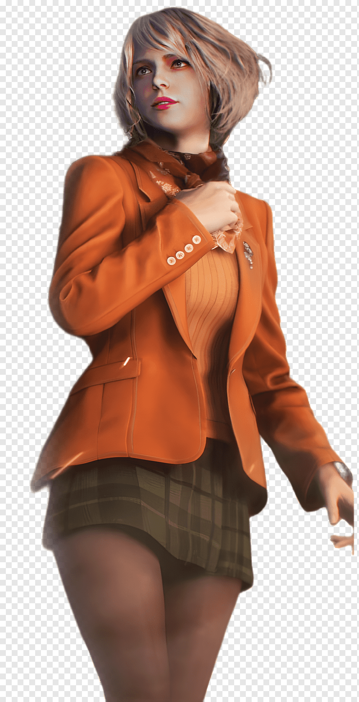

Personajes Principales
Leon S. Kennedy: Un agente especial del gobierno de los EE.UU., encargado de rescatar a la hija del presidente. Leon es habilidoso en combate y tiene experiencia en manejo de crisis relacionadas con bioterrorismo.
Ada Wong: Una espía enigmática con motivaciones ocultas. Ada juega un papel crucial en varios puntos de la trama, ayudando y manipulando a Leon para alcanzar sus propios objetivos.

Ashley Graham: La hija del presidente de los Estados Unidos que ha sido secuestrada por una secta misteriosa. Ashley es más que una simple damisela en apuros, y su relación con Leon evoluciona a lo largo del juego.
Lore del Juego
El juego se sitúa en un misterioso pueblo rural de España, donde Leon lucha contra hordas de aldeanos infectados por un parásito conocido como Las Plagas. La trama se enriquece con la conspiración de cultos y la manipulación biológica.
Mecánicas de Gameplay
El Remake de Resident Evil 4 mantiene la esencia del juego original pero con mejoras significativas en los gráficos y la jugabilidad. Incluye un sistema de apuntado más fluido, un inventario mejorado y elementos interactivos en el entorno.
Críticas y Recepción
El remake de Resident Evil 4 ha sido aclamado por su fidelidad al original mientras innova en aspectos clave, mejorando la experiencia general del juego.